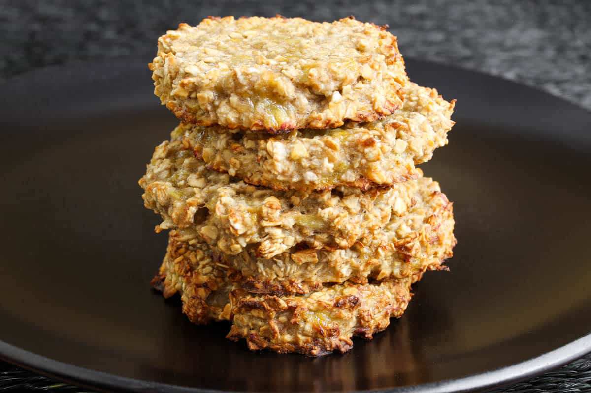

Games A-Z
Banana Oat Biscuits
Ingredients
-
ripe bananas
-
oats
-
milk
-
egg
-
caster sugar
-
vanilla extract
-
peanut butter

Directions
1.
Preheat the oven to 180 celcius (gas mark 4).
2.
Mash the bananas and mix with the oats, milk and egg before adding the remaining ingredients (it just mixes a bit easier and more evenly this way).
3.
These measurements make the mixture just the right consistency for my liking, but if it looks a bit runny to you at this point, throw in another handful of oats to thicken it up.
4.
Grease a cookie tray with 1 cal spray and spoon the mixture on to make around 9 large cookies.
5.
Bake for around 20mins until golden brown.
6.
Allow to cool before serving.